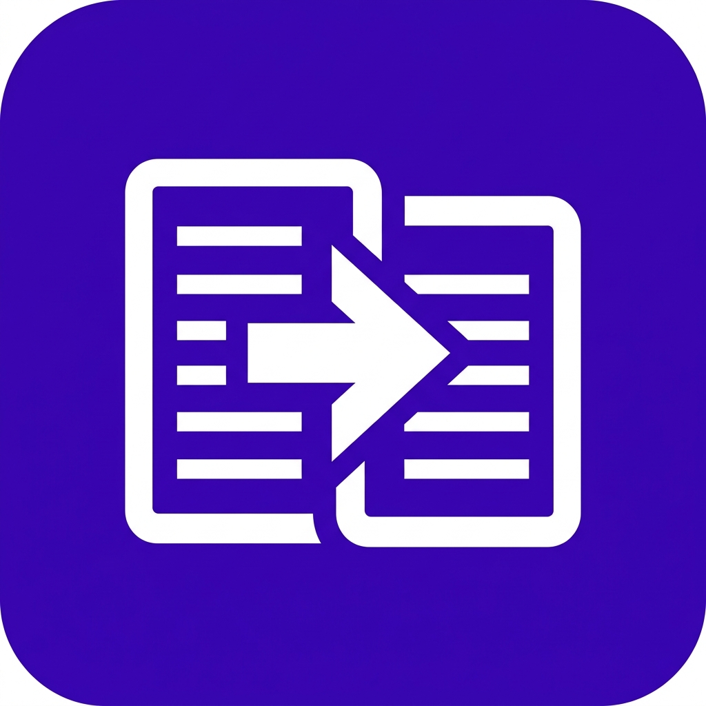
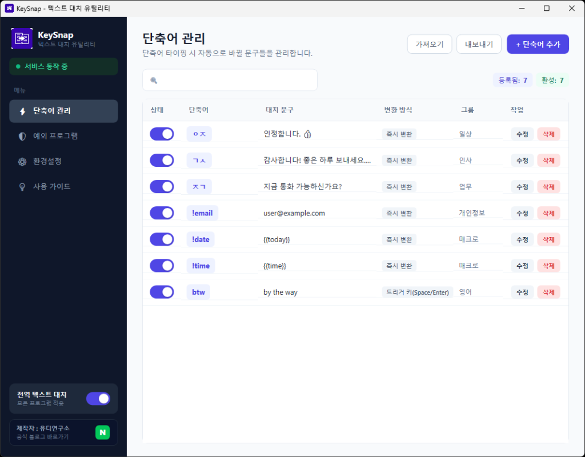
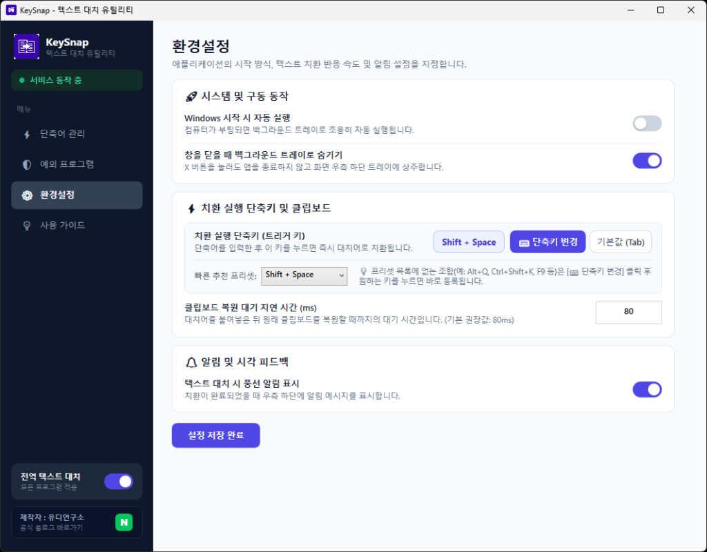
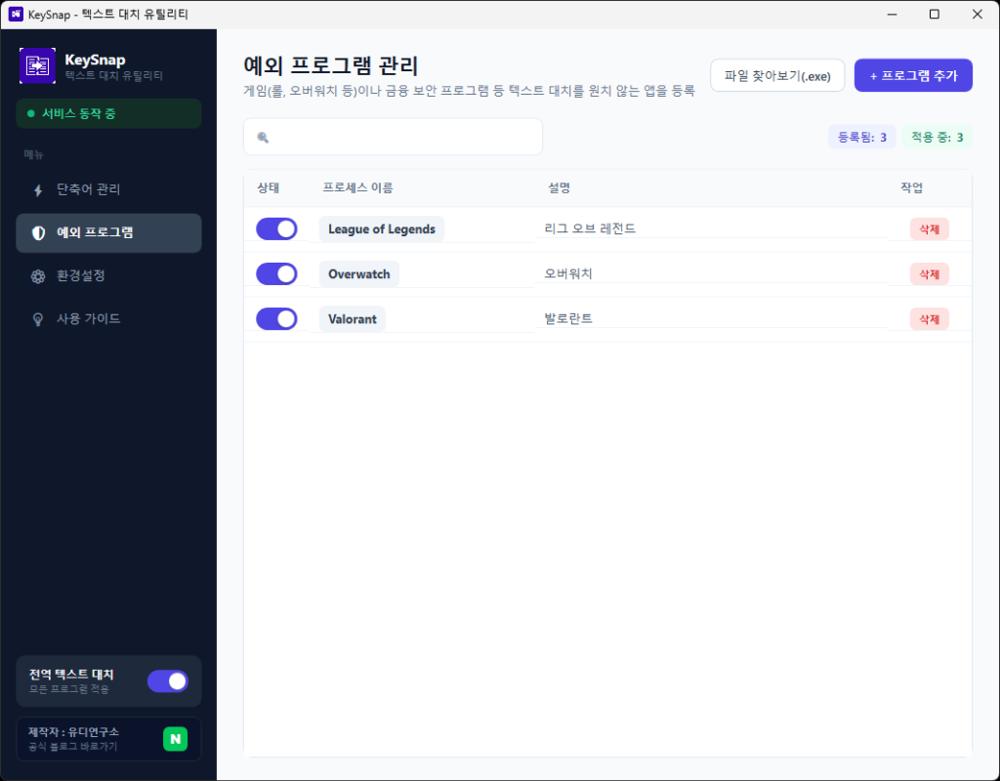
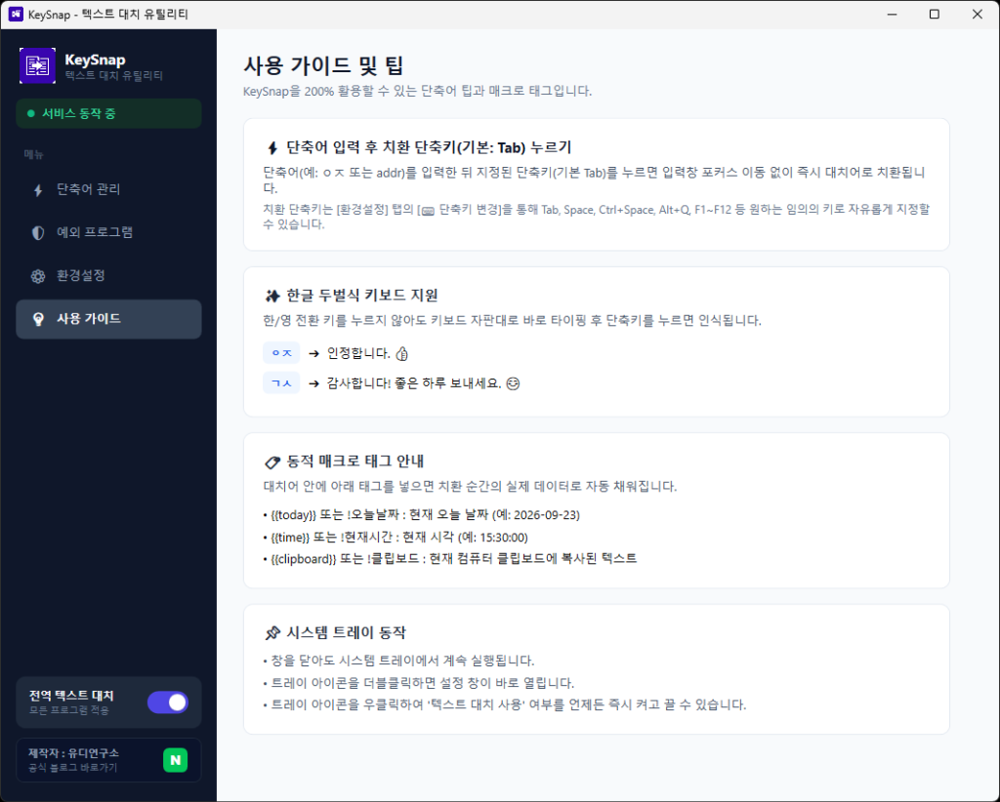

반복되는 긴 문장, 인사말, 이메일 주소, 코드 스니펫을 단축키 하나로 즉시 완성하세요.
macOS의 텍스트 대치를 Windows 환경에서 완벽하게 구현한 고성능·초경량 도구입니다.
KeySnap은 Windows 환경에서 타이핑의 피로를 획기적으로 줄여주는 전역 텍스트 대치(Text Replacement) 전문 유틸리티입니다. 카카오톡, 슬랙, 노션, 웹 브라우저(크롬/엣지), 워드, 메모장 등 사용자가 작업 중인 모든 응용 프로그램에서 지정한 단축어를 입력한 후 단축키를 누르면 즉각 대치어로 자동 변환됩니다.
저수준 키보드 훅(Low-Level Keyboard Hook) 엔진을 탑재하여 어떤 창이 활성화되어 있든 시스템 전역에서 정확하게 키 입력을 감지합니다.
영문 타자 모드나 한글 조합 상태를 신경 쓸 필요 없이, 자판 그대로 ㅇㅈ을 치면 인정합니다. 👍로 완벽하게 자동 변환됩니다.
단축어 입력 후 치환을 실행할 단축키를 Tab, Space, Ctrl+Space, Alt+Q 등 원하는 키보드 조합으로 직접 눌러 자유롭게 지정할 수 있습니다.
텍스트를 주입할 때 사용자가 직전에 복사해 둔 클립보드 내용을 손상시키지 않도록 임시 백업 후 수십 밀리초 내로 원상 복원합니다.
대치어에 오늘 날짜({{today}}), 현재 시각({{time}}), 클립보드 내용({{clipboard}})을 삽입하여 스마트하게 작성할 수 있습니다.
| 파일 형태 | 파일 크기 | 특징 및 추천 대상 |
|---|---|---|
| KeySnap-Setup-v1.0.0.exe | ~66 MB | 표준 설치 프로그램 (권장 ⭐) .NET 런타임 없이 모든 Windows PC에서 원클릭으로 설치 및 실행 가능 |
| KeySnap-Setup-v1.0.0-Lite.exe | ~3 MB | 초경량 설치 프로그램 .NET 8 런타임이 설치되어 있는 PC를 위한 초고속 다운로드 파일 |
| KeySnap.exe | ~1.1 MB | 무설치 포터블 버전 설치 없이 USB나 임의 폴더에서 바로 실행 가능 |
KeySnap의 가장 핵심적인 기능은 등록된 단축어를 감지하여 긴 문장이나 서식 텍스트로 즉각 변환하는 것입니다. 카카오톡, 슬랙, 웹 브라우저, 워드 등 사용자가 작업 중인 모든 응용 프로그램에서 손쉽게 활용할 수 있습니다.

메인 창 좌측의 [단축어 관리] 탭에서 우측 상단의 [+ 단축어 추가] 버튼을 클릭합니다. 대화상자에 사용할 단축어와 변경될 대치 문구를 입력하고 저장합니다.
목록에서 수정하려는 항목의 [수정] 버튼을 누르거나 더블클릭하여 내용을 편집할 수 있으며, 불필요한 단축어는 [삭제] 버튼으로 언제든 제거할 수 있습니다.
자주 쓰지 않는 단축어는 삭제할 필요 없이 목록 좌측의 상태 토글 스위치를 클릭하여 즉시 비활성화할 수 있습니다.
| 단축어 | 대치 문구 | 변환 방식 | 그룹 |
|---|---|---|---|
| ㅇㅈ | 인정합니다. 👍 | 즉시 변환 | 일상 |
| ㄱㅅ | 감사합니다! 좋은 하루 보내세요.... 😊 | 즉시 변환 | 인사 |
| ㅈㄱ | 지금 통화 가능하신가요? | 즉시 변환 | 업무 |
| user@example.com | 즉시 변환 | 개인정보 | |
| !date | {{today}} (현재 오늘 날짜 자동 입력) | 즉시 변환 | 매크로 |
| !time | {{time}} (현재 시각 자동 입력) | 즉시 변환 | 매크로 |
| btw | by the way | 트리거 키 (Space/Enter) | 영어 |
KeySnap은 사용자의 타이핑 습관에 맞추어 원하는 임의의 키보드 단축키를 직접 누르면 즉시 감지되어 적용되는 대화형 키 녹화 기능을 제공합니다.

게임 플레이 중이거나 은행/증권 보안 프로그램, 또는 단축키 간섭이 발생할 수 있는 특정 프로그램에서는 텍스트 대치가 동작하지 않도록 예외 프로그램 목록을 관리할 수 있습니다.

단축어 등록 시 아래의 매크로 코드를 본문에 포함하면, 치환이 일어나는 순간의 실시간 동적 데이터로 자동 변환됩니다.

| 매크로 태그 | 한글 별칭 | 동작 설명 및 예시 결과 |
|---|---|---|
| {{today}} | !오늘날짜 | 현재 날짜를 YYYY-MM-DD 포맷으로 자동 입력 (예: 2026-09-23) |
| {{time}} | !현재시간 | 현재 시각을 HH:mm:ss 포맷으로 자동 입력 (예: 15:30:00) |
| {{clipboard}} | !클립보드 | 컴퓨터 클립보드에 현재 복사되어 있는 텍스트를 대치어 본문 사이에 삽입 |
새로운 PC로 컴퓨터를 교체하거나 다른 동료와 단축어 목록을 공유하고 싶을 때, 단 한 번의 클릭으로 데이터를 내보내고 가져올 수 있습니다.
KeySnap은 안전한 오픈소스 소프트웨어입니다. 신규 배포 프로그램의 경우 마이크로소프트의 누적 다운로드 평판이 쌓이기 전까지 SmartScreen 경고 창이 나타날 수 있습니다.
화면 중앙의 [추가 정보] 링크를 클릭한 후, 활성화되는 [실행] 버튼을 누르시면 정상적으로 설치가 진행됩니다.
KeySnap은 치환 직전 사용자의 클립보드 내용을 임시 백업한 후, 대치어를 입력하고 기본 80ms(밀리초) 이내에 원래 클립보드로 완벽히 복원합니다. 복원 속도는 [환경설정] 탭의 '클립보드 복원 대기 지연 시간'에서 자유롭게 조절할 수 있습니다.